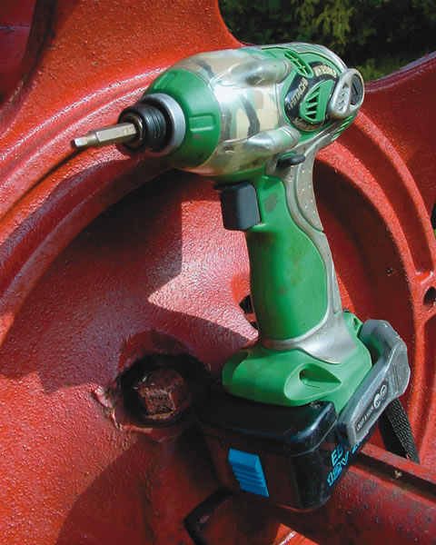
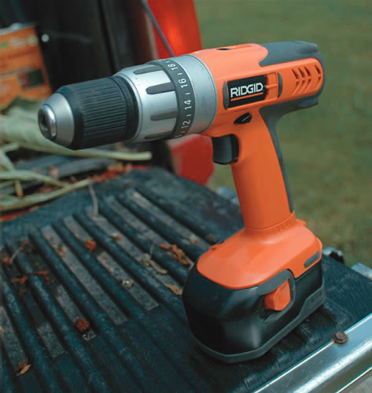
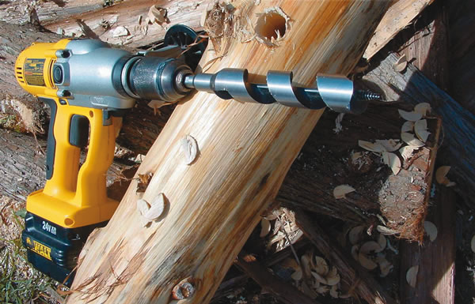

When I moved onto my land in the mid-1980s, I met an old-timer who lived on the property next to mine. He was a big help as I built my house, fixed fences and made a rural life for my family. My neighbor told me he was born 200 yards from where he lived and had spent his working life farming with horses and building houses, barns and cottages for people in the area. He always said that a drill was the most useful electric tool a person could own, and I think he's right. Drills are necessary for everything from boring holes for installing wall anchors, to driving screws while building a bookshelf, to creating peg holes in a timber frame. In fact, its hard to think of a home-building or maintenance job that doesn't require a drill in some way.
Today almost all drills are cordless, and most do a terrific job. If you choose correctly, they allow you to take on any project - no matter how far from an electrical outlet. To find the right cordless drill, you have to assess your needs and ask informed questions.
There are three main types on the market: ordinary drills, drill drivers and impact drivers. Depending on your situation, some make more sense than others. Prices vary widely: a 14.4-volt drill with accessories starts at $80; prices increase from there, up to a few hundred dollars.
Ordinary drills. Every drill of this sort has a chuck that grips drill and driver bits of various sizes. Better models spin both clockwise and counterclockwise at varying speeds, depending on how far you pull the trigger. Drills are often categorized by the maximum diameter of bit they can grip in the chuck. You'll find three-eighths inch is ideal for a general-purpose tool; half inch is better for heavy-duty use.
Drill drivers. As handy as an ordinary drill is, a better choice for all-around homestead use is a drill driver. It has the same features as an ordinary drill, but with one addition that makes screw driving more efficient: an adjustable torque clutch. This popular feature regulates the twisting power, called torque, that is applied to a screw. All manufacturers offer similar clutch systems; a numbered ring sits just behind the chuck and can be adjusted to vary the maximum amount of torque thats delivered to the screwdriver tip. Turn the ring down to a low number, and the clutch delivers only a small amount of twisting force before slipping with a gravelly ratcheting noise. Turn the ring up to a larger number, and the clutch delivers more torque before slipping occurs. At the highest setting, the drill driver operates with no slippage at all - just as if it didnt have a clutch. Full lockup is what you want for drilling, and regulated slippage is for driving multiple screws to about the same depth or tightness. Models with a hammer drill setting are particularly effective on concrete blocks, bricks and stone. These drills pound the drill bit forward during use, doubling or tripling the speed with which they bore through all kinds of masonry. Drill drivers cost slightly more than an ordinary drill; prices vary, but a 14.4-volt drill driver without accessories costs about $80. Some kits can cost up to a few hundred dollars.
Impact drivers. Driving screws isnt always as easy as it should be because driver tips tend to slip out of engagement with the screw head, spinning around and ruining the screw and driver bit in the process. This is called cam out, and its a problem that an impact driver reduces quite effectively.
If you already own a drill for boring holes and youre looking for the ultimate screw-driving implement, then an impact driver is right for you - no question about it. All models look like small cordless drills except they have no chuck. Instead, the business end of the tool has a spring-loaded locking ring that accepts the hexagonal shank of a standard screwdriver bit. Pull the ring back, slip the bit in place and let the ring go. The bit now is locked and ready for use.
The best trait of impact drivers is the way they spin. Pull the trigger without any load on the tool, and the driver rotates just like an ordinary variable-speed drill. But when the screw bites into the wood and gets hard to turn, the impact drive mechanism causes the driver bit to automatically reset itself in the screw head several times per second - making a rat-tat-tat sound similar to the noise made when a mechanic loosens the wheel nuts on your car, and the difference this makes is tremendous. That sound is the driver rotating the screw a partial turn forward and a little turn backward while delivering a high amount of torque to the screw.
This rotation pattern along with the absence of the chuck means you can't bore holes, but it's great for driving screws. The impact driver mechanism is more efficient than an ordinary drill at turning a driver bit slowly under high load conditions. This is why impact drivers can be smaller, lighter and more compact than a drill driver of similar power. Once you've driven screws with an impact driver, you'll never want to go back to an ordinary drill. Impact drivers cost more than ordinary drills or drill drivers. A 12-volt model costs about $130, and up to about $270 for an 18-volt impact driver.
Once you've chosen a drill and/or driver, you'll also need to decide how much power you want. If you want a general-purpose model for drilling and screw driving - a machine thats powerful enough to handle most jobs, yet light enough to hold easily - then consider a 14.4-volt drill driver; less than that and it will lack sufficient power for some common applications. With a 14.4-volt drill, you wont have any trouble boring shallow 1-inch-diameter holes in wood and driving dozens of 3 1/2-inch deck screws on a single charge. For driving screws, a 12-volt impact driver delivers roughly the same performance as a 14.4-volt drill driver because of its high-torque turning ability.
You should look at 18-volt models if youll be drilling regularly in steel, masonry or medium-sized timbers. The only trouble with 18-volt models is their weight and cost: They're a bit heavy for screw driving and more expensive than necessary if you don't require the power. A 24-volt drill (see photo above) has huge amounts of power and is best if you'll be drilling big holes in large timbers in new construction or doing barn frame repairs.
Pay attention to the amp-hour rating of the drill or driver you choose (they range from 1.7 to 3). If voltage can be compared to the size of the motor, then amp-hours is the size of the gas tank. A higher rating means more work can be done per charge.
Many drills are sold together with two batteries and a charger. Because batteries can lose 25 percent of their stored power in the first three days after being charged -and 1 percent to 2 percent for each day thereafter - choose a smart charger that uses a microprocessor to deliver an optimum charge, and then keep the spare battery in the charger. The best advice for cordless tool users is simply to recharge a battery as soon as you observe a drop in performance and keep the battery in a smart charger until its needed.
A good drill driver or impact driver is one of the most valuable tools for self-sufficiency. Choose a contractor-grade kit with a one-hour charger and two batteries, and youll be one step closer to making good things happen for yourself.
|
STEVE MAXWELL Ordinary cordless drills such as this can be used both to drill holes and to drive screws. |
 STEVE MAXWELL This impact driver won’t ruin screw heads and is your best choice for driving screws. |
 STEVE MAXWELL This drill driver uses an adjustable torque clutch to regulate the twisting power applied to a screw. |
|
 STEVE MAXWELL For heavy-duty drilling jobs such as boring through timbers, choose a 24-volt drill. |
|
|